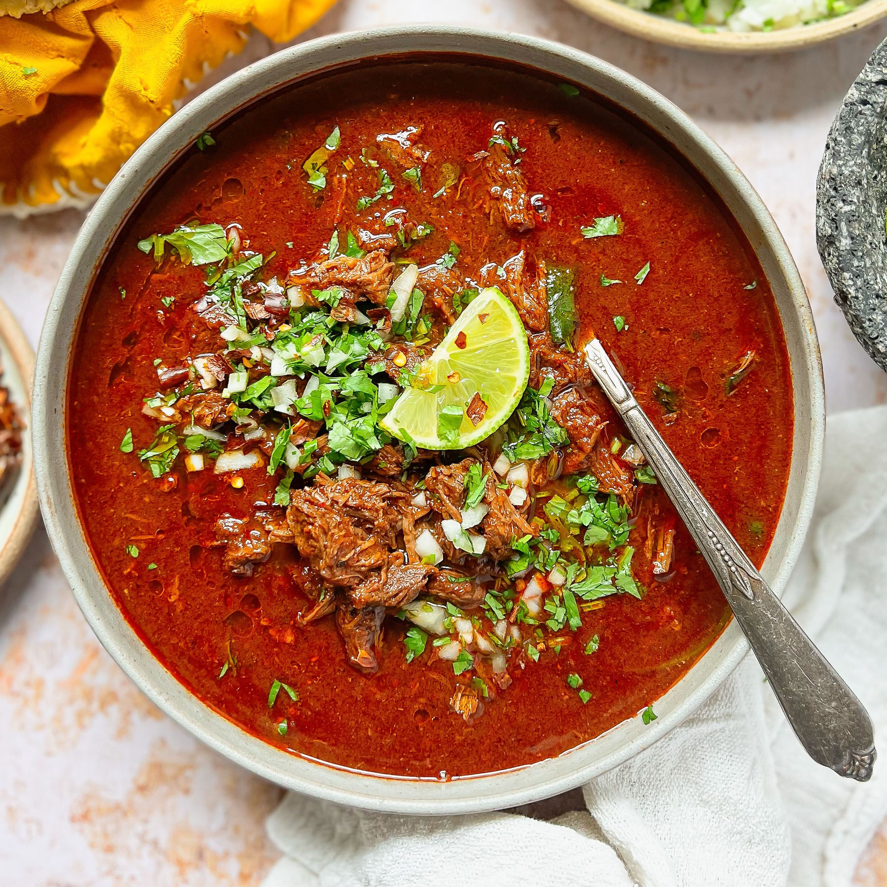

Birria Recipes

Birria is a Mexican dish of stewed meat and spices. It served like a soup or with tortillas.
Ingredients
- 5 dried Anaheim chile peppers, stemmed and seeded
- 5 guajillo chile peppers, stemmed and seeded
- water to cover
- ¼ onion
- 1 tablespoon mixed spices, or more to taste
- 1 tablespoon salt, or to taste
- 3 pounds cubed beef stew meat
- 6 bay leaves
Steps
- Place Anaheim and guajillo peppers in a saucepan; cover with water and bring to a boil. Reduce heat to medium-low and simmer until tender, about 15 minutes. Set aside to cool for 5 minutes.
- Transfer chiles and water into a blender; add onion, mixed spices, and salt. Blend until smooth.
- Place stew meat in a large pot; stir in pureed chile mixture and add bay leaves. Cook over medium-low heat until meat is very tender, 3 to 5 hours.